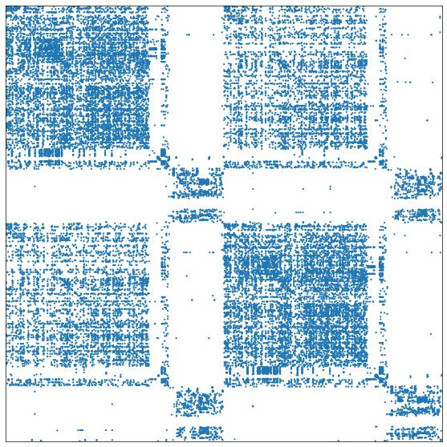
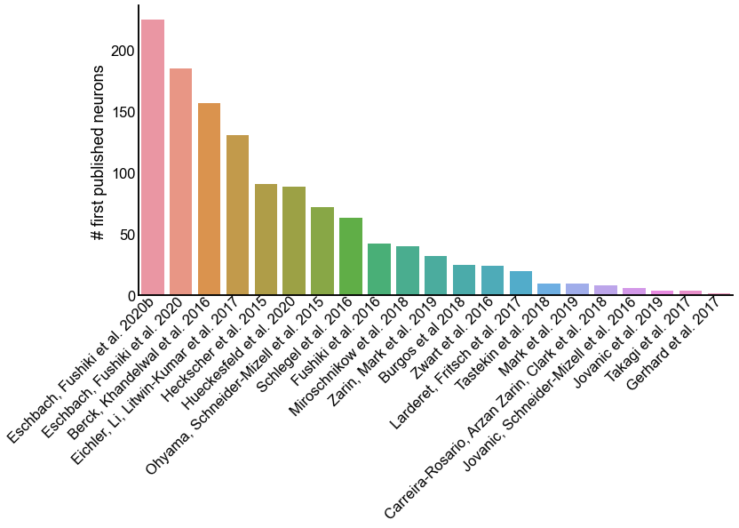

Maggot connectome subset
Contents
Maggot connectome subset#
import datetime
import logging
import time
import matplotlib.pyplot as plt
import networkx as nx
import numpy as np
import pandas as pd
import pymaid
import seaborn as sns
from graspologic.plot import adjplot
from pkg.data import DATA_PATH
from pkg.io import glue as default_glue
from pkg.io import savefig
from pkg.plot import set_theme
from pkg.utils import ensure_connected, select_lateral_nodes
FILENAME = "process_maggot"
DISPLAY_FIGS = True
OUT_PATH = DATA_PATH / "processed_split"
def glue(name, var, **kwargs):
default_glue(name, var, FILENAME, **kwargs)
def gluefig(name, fig, **kwargs):
savefig(name, foldername=FILENAME, **kwargs)
glue(name, fig, figure=True)
if not DISPLAY_FIGS:
plt.close()
t0 = time.time()
set_theme()
rng = np.random.default_rng(8888)
Start Catmaid instance on Virtual Fly Brain#
pymaid.CatmaidInstance("https://l1em.catmaid.virtualflybrain.org/", None)
logging.getLogger("pymaid").setLevel(logging.WARNING)
pymaid.clear_cache()
INFO : Global CATMAID instance set. Caching is ON. (pymaid)
Load the “papers” meta-annotation#
def get_indicator_from_annotation(annot_name, filt=None):
ids = pymaid.get_skids_by_annotation(annot_name.replace("*", "\*"))
if filt is not None:
name = filt(annot_name)
else:
name = annot_name
indicator = pd.Series(
index=ids, data=np.ones(len(ids), dtype=bool), name=name, dtype=bool
)
return indicator
annot_df = pymaid.get_annotated("papers")
series_ids = []
for annot_name in annot_df["name"]:
print(annot_name)
indicator = get_indicator_from_annotation(annot_name)
if annot_name == "Imambocus et al":
indicator.name = "Imambocus et al. 2022"
series_ids.append(indicator)
annotations = pd.concat(series_ids, axis=1, ignore_index=False).fillna(False)
Zwart et al. 2016
Berck, Khandelwal et al. 2016
Eichler, Li, Litwin-Kumar et al. 2017
Larderet, Fritsch et al. 2017
Ohyama, Schneider-Mizell et al. 2015
Jovanic, Schneider-Mizell et al. 2016
Schlegel et al. 2016
Fushiki et al. 2016
Takagi et al. 2017
Heckscher et al. 2015
Gerhard et al. 2017
Burgos et al 2018
Miroschnikow et al. 2018
Jovanic et al. 2019
Carreira-Rosario, Arzan Zarin, Clark et al. 2018
Zarin, Mark et al. 2019
Mark et al. 2019
Andrade et al. 2019
Tastekin et al. 2018
Eschbach, Fushiki et al. 2020
Eschbach, Fushiki et al. 2020b
Hueckesfeld et al. 2020
Valdes-Aleman et al. 2021
Get the pairings#
This section is not meant to be rerun - it was used to get the subset of pairs from a forthcoming paper (Winding, Pedigo et al. 2022) which were previously published.
# # TEMP: code to subset the pairs, not to be run again
# pairs = pd.read_csv("bgm/data/maggot/pairs-2021-04-06.csv")
# nodes = []
# pair_id_counter = 0
# for _, row in pairs.iterrows():
# if (row["leftid"] in annotations.index) and (row["rightid"] in annotations.index):
# nodes.append(
# {"node_id": row["leftid"], "pair": pair_id_counter, "hemisphere": "L"}
# )
# nodes.append(
# {"node_id": row["rightid"], "pair": pair_id_counter, "hemisphere": "R"}
# )
# pair_id_counter += 1
# nodes = pd.DataFrame(nodes)
# counts = nodes["node_id"].value_counts()
# duplicates = counts[counts > 1].index
# nodes = nodes.set_index("node_id")
# bad_pairs = nodes.loc[duplicates, "pair"]
# nodes = nodes[~nodes["pair"].isin(bad_pairs)]
# nodes.sort_values(["hemisphere", "pair"], inplace=True)
# nodes.to_csv("bgm/data/maggot/nodes.csv")
Load the pair data#
Saved locally, these are just published neurons
raw_path = DATA_PATH / "maggot"
nodes = pd.read_csv(raw_path / "nodes.csv", index_col=0)
Load their connectivity data#
adj_df = pymaid.adjacency_matrix(nodes.index.values)
adj_df = pd.DataFrame(
data=adj_df.values.astype(int), index=adj_df.index, columns=adj_df.columns
)
Filter data#
Make sure neurons are lateralized and fully connected
adj_df, nodes, removed_nonlateral = select_lateral_nodes(adj_df, nodes)
# then ensure the network is fully connected
adj_df, nodes, removed_lcc = ensure_connected(adj_df, nodes)
# then remove any nodes whose partner got removed by that process
adj_df, nodes, removed_partner_lcc = select_lateral_nodes(adj_df, nodes)
# REPEAT in case this removal of partners causes disconnection
adj_df, nodes, removed_lcc2 = ensure_connected(adj_df, nodes)
adj_df, nodes, removed_partner_lcc2 = select_lateral_nodes(adj_df, nodes)
Plot the resulting adjacency matrix#
_ = adjplot(adj_df.values, plot_type="scattermap")

Compute some simple statistics#
left_index = nodes[nodes["hemisphere"] == "L"].index
right_index = nodes[nodes["hemisphere"] == "R"].index
m_ll = np.count_nonzero(adj_df.loc[left_index, left_index])
m_rr = np.count_nonzero(adj_df.loc[right_index, right_index])
m_lr = np.count_nonzero(adj_df.loc[left_index, right_index])
m_rl = np.count_nonzero(adj_df.loc[right_index, left_index])
m_contra = m_lr + m_rl
m_ipsi = m_ll + m_rr
p_contra = m_contra / (m_ipsi + m_contra)
glue("p_contra", p_contra, form="2.0f%")
print(f"Probability of an edge being a contralateral: {p_contra:.2f}")
Probability of an edge being a contralateral: 0.35
Save the finalized network and node metadata#
g = nx.from_pandas_adjacency(adj_df, create_using=nx.DiGraph)
nx.write_edgelist(
g, OUT_PATH / "maggot_subset_edgelist.csv", delimiter=",", data=["weight"]
)
nodes.to_csv(OUT_PATH / "maggot_subset_nodes.csv")
Examine annotations of the neurons used here#
annotations_year = [s.split(" ")[-1] for s in annotations.columns]
annotations_year = pd.Series(data=annotations_year, index=annotations.columns)
annotations_year = annotations_year.sort_index()
annotations_year = annotations_year.sort_values(kind="stable")
annotations = annotations.loc[nodes.index]
annotations = annotations.reindex(columns=annotations_year.index)
annotations = annotations.sort_values(list(annotations.columns), ascending=False)
Examples of neurons published on twice in the same year#
n_pubs = annotations.sum(axis=1)
multi_pub_annotations = annotations[n_pubs > 1]
for idx, row in multi_pub_annotations.iterrows():
years = annotations_year[row].values
if (years == years.min()).all():
print(idx)
print(annotations_year[row])
print()
4123145
Mark et al. 2019 2019
Zarin, Mark et al. 2019 2019
dtype: object
11106522
Mark et al. 2019 2019
Zarin, Mark et al. 2019 2019
dtype: object
6578062
Mark et al. 2019 2019
Zarin, Mark et al. 2019 2019
dtype: object
12820178
Mark et al. 2019 2019
Zarin, Mark et al. 2019 2019
dtype: object
2798040
Mark et al. 2019 2019
Zarin, Mark et al. 2019 2019
dtype: object
4542822
Mark et al. 2019 2019
Zarin, Mark et al. 2019 2019
dtype: object
10858401
Mark et al. 2019 2019
Zarin, Mark et al. 2019 2019
dtype: object
12809976
Mark et al. 2019 2019
Zarin, Mark et al. 2019 2019
dtype: object
4386719
Mark et al. 2019 2019
Zarin, Mark et al. 2019 2019
dtype: object
6570401
Mark et al. 2019 2019
Zarin, Mark et al. 2019 2019
dtype: object
16848475
Eschbach, Fushiki et al. 2020 2020
Hueckesfeld et al. 2020 2020
dtype: object
17176866
Eschbach, Fushiki et al. 2020 2020
Hueckesfeld et al. 2020 2020
dtype: object
9841469
Eschbach, Fushiki et al. 2020 2020
Hueckesfeld et al. 2020 2020
dtype: object
11637003
Eschbach, Fushiki et al. 2020 2020
Hueckesfeld et al. 2020 2020
dtype: object
17980792
Eschbach, Fushiki et al. 2020 2020
Hueckesfeld et al. 2020 2020
dtype: object
17176882
Eschbach, Fushiki et al. 2020 2020
Hueckesfeld et al. 2020 2020
dtype: object
Get all papers for which one of our neurons was published for the first time#
first_locs = np.argmax(annotations.values, axis=1)
first_published = annotations.columns[first_locs]
used_papers = first_published.unique()
counts = first_published.value_counts()
counts.name = "count"
print("Used papers:")
_ = [print(paper) for paper in used_papers]
print()
print()
print("Papers in 'papers' annotation not in this list:")
_ = [print(paper) for paper in np.setdiff1d(annotations.columns, used_papers)]
Used papers:
Heckscher et al. 2015
Ohyama, Schneider-Mizell et al. 2015
Berck, Khandelwal et al. 2016
Fushiki et al. 2016
Jovanic, Schneider-Mizell et al. 2016
Schlegel et al. 2016
Zwart et al. 2016
Eichler, Li, Litwin-Kumar et al. 2017
Gerhard et al. 2017
Larderet, Fritsch et al. 2017
Takagi et al. 2017
Burgos et al 2018
Carreira-Rosario, Arzan Zarin, Clark et al. 2018
Miroschnikow et al. 2018
Tastekin et al. 2018
Jovanic et al. 2019
Mark et al. 2019
Zarin, Mark et al. 2019
Eschbach, Fushiki et al. 2020
Hueckesfeld et al. 2020
Eschbach, Fushiki et al. 2020b
Papers in 'papers' annotation not in this list:
Andrade et al. 2019
Valdes-Aleman et al. 2021
Mark et al. 2019
missingHueckesfeld et al. 2020 (actually published 2021)
Eschbach, Fushiki et al. 2020b (actually published 2021)
Plot the breakdown of first-published neurons by paper#
fig, ax = plt.subplots(1, 1, figsize=(12, 6))
sns.barplot(x=counts.index, y=counts, ax=ax)
ax.set(ylabel="# first published neurons")
_ = plt.setp(
ax.get_xticklabels(),
rotation=45,
ha="right",
va="center",
rotation_mode="anchor",
)

End#
elapsed = time.time() - t0
delta = datetime.timedelta(seconds=elapsed)
print(f"Script took {delta}")
print(f"Completed at {datetime.datetime.now()}")
Script took 0:00:11.913105
Completed at 2022-05-23 10:59:10.335200